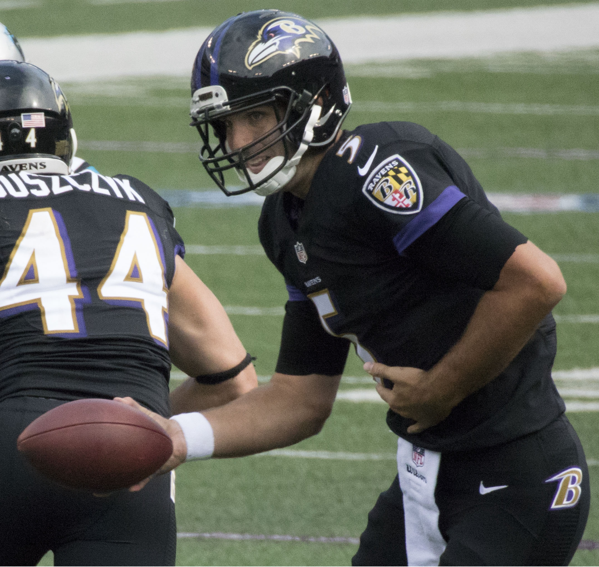

Joe Flacco
"Joe Cool" & the "Wacko for Flacco!" Era
Joe Flacco was drafted by the Ravens in 2008 and played for the team for 11 seasons. During his time with the team, he threw for over 38,000 yards and 212 touchdowns. He was also a very durable player, starting 163 games in a row at one point. He was known for his strong arm and his ability to make big plays in clutch situations, and he was a key factor in the team's Super Bowl victory in 2013. Off the field, he was involved in many charitable causes and was a respected member of the community. Wacko for Flacco was a popular phrase among Ravens fans during Joe Flacco's tenure with the team. It was a way of expressing their enthusiasm and support for Flacco as the team's quarterback. The phrase became so popular that it was even used in a commercial for a local car dealership. Overall, it was a fun and lighthearted way for fans to show their love for one of the team's greatest players. "Joe Cool" was also a nickname for Joe Flacco, particularly during the team's Super Bowl run in 2013. Like Montana, Flacco was known for his calm and composed demeanor on the field, even in high-pressure situations. He was a key factor in the team's Super Bowl victory that year. Overall, he was a great player and a great person, and he will always be remembered as one of the best quarterbacks in Ravens history.
Notable Seasons & Stats:
| Season | Wins | Completion % | Passing Yards | TDs |
|---|---|---|---|---|
| 2010 | 12 | 62.6% | 3,622 | 25 |
| 2012 | 10 | 59.7% | 3,817 | 22 |
| 2014 | 10 | 62.1% | 3,986 | 27 |
Jonathan Ogden had an outstanding career with the Baltimore Ravens, but his three most notable seasons would have to be 2000, 2003, and 2006. In 2000, Ogden was a key part of the Ravens' Super Bowl-winning team, as he helped protect quarterback Trent Dilfer and open up running lanes for the offense. In 2003, he was named the NFL's Offensive Lineman of the Year, and helped lead the Ravens to a 10-6 record. In 2006, he was once again named to the Pro Bowl, and helped anchor an offensive line that allowed the fewest sacks in the league. For more detailed stats or notable records, visit the Pro Football Reference stat page for Jonathan Ogden, which can be found here.